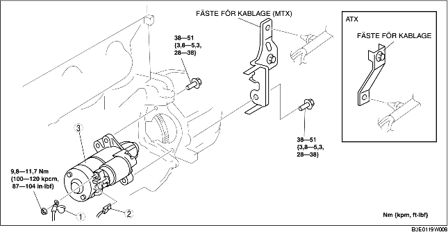

DEMONTERING/MONTERING AV STARTMOTOR [ZJ, Z6]
B3E011918400W03
-
Varni ng
-
• Om startmotorns pol B kommer i kontakt med karossen medan batterikablarna är anslutna, bildas det gnistor. Det kan orsaka personskador, brand och skador på elektriska komponenter. Koppla alltid bort batteriets minuskabel innan du gör följande.
1. Demontera batterikåpan. (Se DEMONTERING/MONTERING AV BATTERI [ZJ, Z6].)
2. Lossa batteriets minuskabel.
3. Ta bort den undre kåpan.
4. Demontera i den ordning som anges i tabellen.
5. Montera i omvänd ordning mot demonteringen.

.
|
1
|
Kabel för kontaktstift B
|
|
2
|
Kontaktistift för pol S
|
|
3
|
Startmotor
|